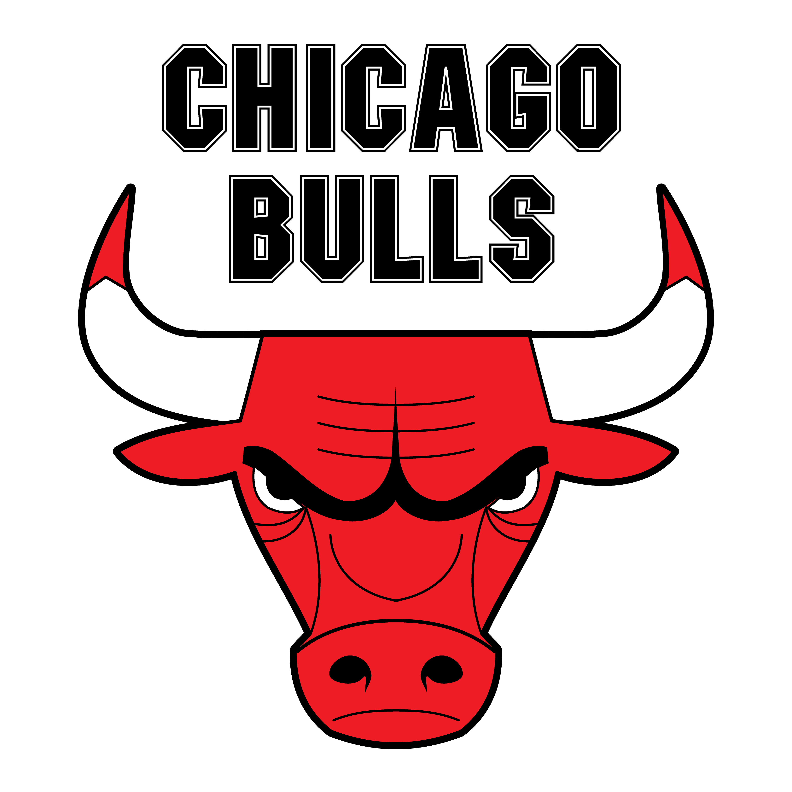

---chicago bulls
---O Chicago Bulls é um time de basquete profissional americano sediado em Chicago, Illinois. Os Bulls competem na National Basketball Association (NBA) como um membro da Divisão Central da Conferência Leste da liga.[3] A equipe foi fundada em 16 de janeiro de 1966 e jogou seu primeiro jogo durante a temporada de 1966/67.[4] Os Bulls jogam seus jogos em casa no United Center, uma arena compartilhada com o Chicago Blackhawks da NHL.
Os Bulls tiveram sucesso durante os anos 90, quando foram responsáveis por popularizar a NBA em todo o mundo. Eles são conhecidos por terem uma das maiores dinastias da NBA, vencendo seis títulos da NBA entre 1991 e 1998. Todas as seis equipes foram lideradas por Michael Jordan, Scottie Pippen e pelo técnico Phil Jackson. Os Bulls é a única franquia da NBA a vencer vários campeonatos e nunca perder uma série de finais da NBA em sua história. Muitos especialistas e analistas consideram o Bulls de 1992 uma das maiores equipes da história da NBA.
Os Bulls compartilham rivalidades com o Cleveland Cavaliers, Detroit Pistons, Miami Heat e New York Knicks. A rivalidade dos Bulls com os Pistons foi destacada fortemente no final dos anos 80 e início dos anos 90.

História da franquia
1966–1975: Criação e sucesso inicial
Em 16 de janeiro de 1966, Chicago recebeu uma franquia da NBA chamada Bulls. O Chicago Bulls se tornou a terceira franquia da NBA na cidade, depois do Chicago Stags (1946–1950) e do Chicago Packers / Zephyrs (1961–1963; agora Washington Wizards). O fundador da equipe, Dick Klein, foi o único proprietário a jogar basquete profissional (no Chicago American Gears). Ele atuou como presidente e gerente geral dos Bulls nos primeiros anos.
Após o Draft de expansão da NBA de 1966, o recém-fundado Chicago Bulls pôde adquirir jogadores das equipes previamente estabelecidas na liga para a temporada de 1966/67. A equipe começou na temporada de 1966/67 e registrou o melhor recorde de uma equipe de expansão na história da NBA. Treinados por Johnny Kerr[5] e liderados por Guy Rodgers, Jerry Sloan e Bob Boozer, os Bulls se classificaram para os playoffs, sendo a única equipe da NBA a fazer isso em sua temporada inaugural.[6]
O Chicago Bulls de 1969–70
Na primeira temporada, os Bulls jogou no Anfiteatro Internacional, antes de se mudar para o Chicago Stadium.